Cartel a tinta sobre papel, con un ojo rojo que no parpadea.
Fichaitor cuida la ficha de Google de un negocio y escribe a su dueño cuando hay algo que decidir. El nombre juega con Terminator: un robot implacable, pero a tu servicio.
Claridad de cartel
Se lee de un vistazo, desde el otro lado de la barra.
Fichaitor está mirando
El punto del símbolo, el punto final de los titulares y los estados en directo.
Las reseñas son el producto
El amarillo aparece solo en estrellas de valoración.
El símbolo es una F de bloque con un punto rojo: el punto final de «F.» y el ojo. La palabra es Archivo Expanded Black en curvas, cerrada con el mismo punto. El punto siempre es rojo, salvo sobre la banda roja, donde va en papel.
03| Regla | Valor |
|---|---|
| Área de respeto | x = un cuarto del alto del símbolo, en los cuatro lados |
| Símbolo, mínimo | 16 px |
| Palabra, mínimo | 20 px de alto en pantalla, 6 mm impresa |
| Recorte circular | El símbolo cabe entero dentro del círculo |
| Nunca junto a su logotipo ni con sus cuatro colores |
No la estires.
No la gires.
No cambies el color del punto.
Sin sombras difusas ni esquinas redondas.
| Texto / fondo | Contraste |
|---|---|
| Tinta / papel | 17,19 |
| Tinta / rojo ojo | 5,55 |
| Rojo tinta / papel | 5,15 |
| Rojo ojo / papel | 3,10 · solo titulares |
Color plano: ningún degradado, brillo ni desenfoque. El rojo ocupa una sola sección a pantalla completa por página. El amarillo no es color de marca. El verde es de Bitclick, no de Fichaitor.
Archivo: una sola familia, variable en peso y en ancho.
Cartel · 900 · ancho 125
Al día.
Titulares y cifras. Mayúsculas, interlineado 0,88, tracking −0,04 em.
Rótulo · 800 · ancho 112
Tú confirmas
Subtítulos, botones, navegación.
Texto · 400–500 · ancho 100
Te avisa de cada reseña y te propone la respuesta.
Párrafos, formularios y tablas.
Botones
Bloque con sombra dura. Uno principal por pantalla.
Paso numerado
01
Conectas tu ficha
Rejilla con bordes de 2 px compartidos.
Lo que no existe
Píldoras, insignias y etiquetas flotantes.
Degradados, brillos y sombras difusas.
Iconos decorativos y emojis.
Excepción: las maquetas de la ficha y del chat conservan sus esquinas, porque representan otra interfaz.
Movimiento
Los titulares entran por líneas, desde abajo. El scroll es suave y las escenas clave se anclan. Cada sección tapa a la anterior. El ojo late despacio. Nada rebota ni gira.
Con movimiento reducido, todo se muestra completo y estático.
Voz
| Así no | Así sí |
|---|---|
| «Optimiza tu presencia en Google con IA.» | «Tu ficha de Google, al día.» |
| «¡Dispara tus reseñas!» | «Te avisa de cada reseña y te propone la respuesta.» |
| «Gestión automática de tu reputación.» | «Tú confirmas. Fichaitor lo hace.» |